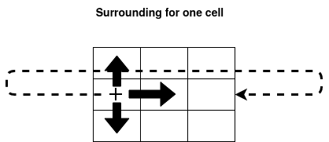
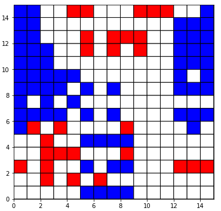
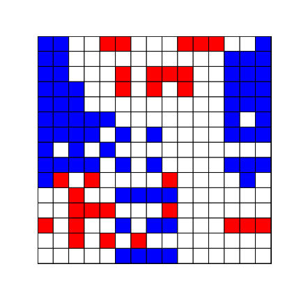
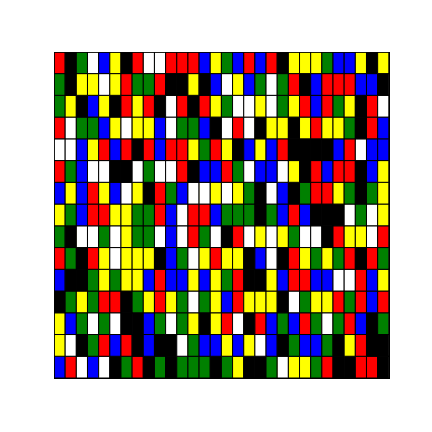

Extended Game of Life
- 22 Nov 2020
- Manuel Capel
- Tags: miscellanous
Invented by Conway in 1970, the game of life is a quite fascinating application of cellular automata with deep implications in computer science and mathematics. Let’s just see here how to make a pretty flexible multi-valued and multi-dimensional implementation of them leveraging numpy.
1
2
3
4
5
6
import numpy as np
from matplotlib import pyplot as plt
from matplotlib import colors
import imageio
from IPython.display import display, Imagecmap = colors.ListedColormap([‘blue’, ‘white’, ‘red’])
N = 15
We begin with defining a NxN grid with random integer values in (0, 1, 2) on its squares:
1
arr = np.random.randint(3, size=N * N, dtype=np.int8).reshape(N, N)
Then for each value we define:
- the surrounding for cells in the grid having this value
- the rules to apply for these cells
If we take for example [(1, 0), (-1, 0), (0, 1), (0, -1)] as surrounding/neigborhood for the cells in state 0 at the current step, it means that for each of those cells, at position say p, we will sum the values of the cells located at p + (1, 0), p + (-1, 0), p + (0, 1) and p + (0, -1). If the a surrounding cell lands over the edge, it continues on the other side.

The transitions correspond to the mapping of this sum to (0, 1, 2). For example, transitions_0 = [((0, 1), 1), ((2, 3), 1), ((4, np.inf), 0)] means that if 0 <= sum <=1 then the concerned cell will turn to value 1, if 2<= sum <=3 then the concerned cell will turn to value 1 also, if sum >=4 it will turn to 0.
1
2
3
4
5
6
7
8
9
10
11
12
13
14
# Tuple ind surroundings must have at most as many elements as dimensions in `arr`
surrounding_0 = [(1, 0), (-1, 0), (0, 1), (0, -1)]
surrounding_1 = [(1, 1), (-1, -1), (-1, 1), (1, -1)]
surrounding_2 = [(1, 1), (-1, -1), (-1, 1), (1, -1)]
transitions_0 = [((0, 1), 1), ((2, 3), 1), ((4, np.inf), 0)]
transitions_1 = [((0, 2), 0), ((3, 3), 1), ((4, np.inf), 1)]
transitions_2 = [((0, 2), 2), ((3, 4), 1), ((4, np.inf), 0)]
rules = {
0: (surrounding_0, transitions_0),
1: (surrounding_1, transitions_1),
2: (surrounding_2, transitions_2)
}
Note: Here and in the following, we use completely arbitrary sets of surroundings (a.k.a. neighborhoods) and transitions for the cells. surrounding_k (resp. transitions_k) denotes the set of surroundings/neighbors (resp. transitions) applicable to cells have value/state k at the current step.
This way you can create any set of rules on any set of states instead of the three rules on 2 states of the original Conway’s game of life, also rules implying very distant cells, as you wish.
Now we define a few functions to compute each step of the evolution of the grid:
1
2
3
4
5
6
7
8
9
10
11
12
13
14
15
16
17
18
19
20
21
22
23
24
25
26
27
28
29
30
31
32
33
34
35
36
37
38
39
40
41
42
43
44
45
46
47
# Tuple ind surroundings must have at most as many elements as dimensions in `arr`
surrounding_0 = [(1, 0), (-1, 0), (0, 1), (0, -1)]
surrounding_1 = [(1, 1), (-1, -1), (-1, 1), (1, -1)]
surrounding_2 = [(1, 1), (-1, -1), (-1, 1), (1, -1)]
transitions_0 = [((0, 1), 1), ((2, 3), 1), ((4, np.inf), 0)]
transitions_1 = [((0, 2), 0), ((3, 3), 1), ((4, np.inf), 1)]
transitions_2 = [((0, 2), 2), ((3, 4), 1), ((4, np.inf), 0)]
rules = {
0: (surrounding_0, transitions_0),
1: (surrounding_1, transitions_1),
2: (surrounding_2, transitions_2)
}
def get_values(arr, surrounding):
""" Compute and returns an array `value` corresponding to the sum of
the values in the `surrounding` of each cell in `arr` """
values = np.zeros(shape=arr.shape)
for cell in surrounding:
intermediary = arr.copy()
for i in range(len(cell)):
intermediary = np.roll(intermediary, cell[i], axis=i)
values = np.add(values, intermediary).astype(np.int8)
return values
def get_result(values, transitions, mask):
""" Computes an array `value` corresponding to the
`transitions` applied to the cells in the `mask` """
for (inf, sup), rvalue in transitions:
mask_rule = (values >= inf) & (values <= sup) & mask
np.putmask(values, mask_rule, rvalue)
return values
def forward(arr, rules):
""" Compute the next step by applying successively the sum for each step correponding its
surrounding and then the transitions. The surroundings and the transitions are defined
for each possible cell value in `rules` """
for value, (surrounding, transitions) in rules.items():
mask = (arr == value)
values = get_values(arr, surrounding)
arr = get_result(values, transitions, mask)
np.putmask(arr, mask, values)
return arr
We can visualize the result of one step forward for arr:
1
2
3
arr = forward(arr, rules)plt.figure(figsize=(6,6))
plt.pcolor(arr[::-1], cmap=cmap ,edgecolors=’k’, linewidths=1)
plt.show()

We can also generate and save a gif representing the evolution of the grid arr over many steps:
1
2
3
4
5
6
7
8
9
10
11
12
13
14
15
16
17
18
19
20
21
22
23
24
25
26
27
28
29
30
31
32
33
34
35
36
n_steps = 30
path = './gol.gif'
fps = 5
def generate_gif(n_steps, arr, rules, path, cmap, figsize=(6, 6), fps=5):
"""
Generate and save a gif to `path` corresponding to `n_steps`successive
steps of evolution of `arr` according to `rules`
:param n_step: int, number of steps to make the grid `arr` evolve
:param arr: numpy array of the initial grid
:param rules: dic, value => (surrounding, transitions)
:param path: path where to save the resulting gif
:param cmap: matplotlib cmap object. Must contains as many colors as possible values in `arr`
:param figsize: size of each figure in the gif
:param fps: frames per second for the resulting gif
"""
images = []
for i in range(n_steps):
if i > 0:
arr = forward(arr, rules)
fig, ax = plt.subplots(figsize=(6, 6))
ax.pcolor(arr[::-1], cmap=cmap ,edgecolors='k', linewidths=1)
ax.set_xticks([])
ax.set_yticks([])
# Used to return the plot as an image rray
fig.canvas.draw() # draw the canvas, cache the renderer
plt.close(fig) # Prevent each individual image for the gif to be displayed here
image = np.frombuffer(fig.canvas.tostring_rgb(), dtype='uint8')
image = image.reshape(fig.canvas.get_width_height()[::-1] + (3,))
images.append(image)
imageio.mimsave(path, images, fps=fps)
print(f'INFO: gif saved to {path}')
generate_gif(n_steps, arr, rules, path, cmap, figsize=(6, 6), fps=5)

Multi-dimensional and multi-valued
Nothing prevents us to define the a game of life for say a 4-dimensional hypercube of dimension 15x20x30x10 with 5 possible values:
1
2
3
4
5
6
7
8
9
10
11
12
13
14
15
16
17
18
19
20
21
22
23
24
25
26
27
cmap = colors.ListedColormap(['blue', 'white', 'red', 'green', 'yellow', 'black'])
K, N, M, P = 15, 20, 30, 10
surrounding_0 = [(1, 0, 2, 1), (-1, 0, 1, 3), (0, 1, 0, 3), (0, -1, 3, 1)]
surrounding_1 = [(1, 1, -2, 1), (-1, -1, 1, 1), (-1, 1, 1, 0), (1, 3, -1, 4)]
surrounding_2 = [(1, 1, 2, 2), (-1, -1, -1, 1), (-1, 1, -1, 1), (1, -1, 1, 1)]
surrounding_3 = [(1, 0, 0, 1), (-1, 0, 1, 0), (0, 1, 1, 0), (0, -1, 1, -1)]
surrounding_4 = [(1, 1, 2, 1), (-1, -1, 1, 2), (-1, 1, 1, 1), (1, 1, 2, -1)]
surrounding_5 = [(2, 1, 1, 0), (-1, 2, -1, 1), (-1, 1, 1, -1), (1, 1, -1, -1)]
transitions_0 = [((0, 1), 1), ((2, 3), 1), ((4, 6), 3), ((7, 9), 4), ((10, np.inf), 0)]
transitions_1 = [((0, 2), 0), ((3, 3), 1), ((4, 10), 2), ((11, np.inf), 1)]
transitions_2 = [((0, 2), 2), ((3, 4), 1), ((5, 6), 3), ((7, 7), 1), ((8, 8), 4), ((9, np.inf), 5)]
transitions_3 = [((0, 1), 1), ((2, 3), 1), ((3, 6), 4), ((7, 9), 5), ((10, np.inf), 4)]
transitions_4 = [((0, 2), 0), ((3, 3), 1), ((4, 6), 4), ((7, np.inf), 5)]
transitions_5 = [((0, 2), 2), ((3, 4), 1), ((5, 6), 2), ((7, 7), 5), ((8, np.inf), 2)]
rules = {
0: (surrounding_0, transitions_0),
1: (surrounding_1, transitions_1),
2: (surrounding_2, transitions_2),
3: (surrounding_3, transitions_3),
4: (surrounding_4, transitions_4),
5: (surrounding_5, transitions_5)
}
arr = np.random.randint(6, size=K * N * M * P, dtype=np.int8).reshape(K, N, M, P)
We can represent only a 2-dimensional slice of arr, so let’s draw for example the slice corresponding the the position 3 in the second dimension and position 4 in the fourth dimension, the same way than before, and we get:

As you can see, there are no much limitations to your imagination with this implementation.
Thank you for reading and have fun!